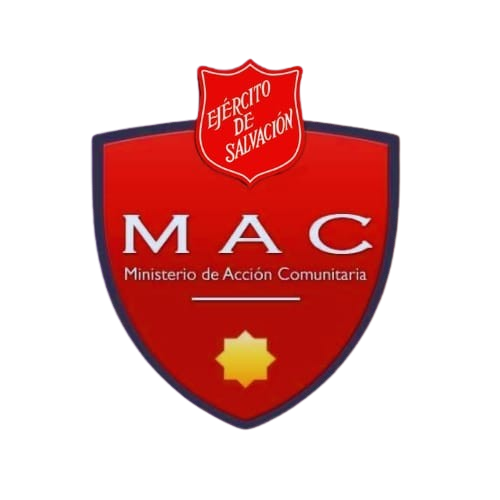

Ministerio de acción comunitaria · MAC
Llevamos alimento, abrigo y el evangelio a quienes más lo necesitan. Cada visita es una oportunidad de servir y de compartir el amor de Dios con el mundo.
Quiénes somos
Somos voluntarios del Ejército de Salvación, una institución cristiana que opera fielmente en más de 134 países
en todo el mundo. En Puerto Montt trabajamos acompañando a quienes más lo necesitan. Nos mueve el amor por el prójimo,
por eso salimos a terreno a entregar alimentos,
ropa y útiles de aseo personal a las familias que están pasando por momentos difíciles.
Cada visita es una oportunidad para
abrazar a las personas y compartir con ellas el evangelio de Jesucristo. Tenemos la firme convicción de que aliviar las necesidades
del cuerpo y anunciar el mensaje de salvación son dos misiones que siempre van de la mano.
Es por esto que decidimos crear este sitio web,
con el fin de dar visibilidad a este trabajo tan hermoso de ayudar a los demás con amor. ¡Así podemos seguir llegando
a más personas!
Nuestro trabajo
Visítanos
Dirección
Séptimo de Línea 148, Puerto Montt, Chile
¿Quieres ser parte de nosotros?
Nuestras reuniones se realizan cada domingo a las 17:00 horas. Dios te bendiga.